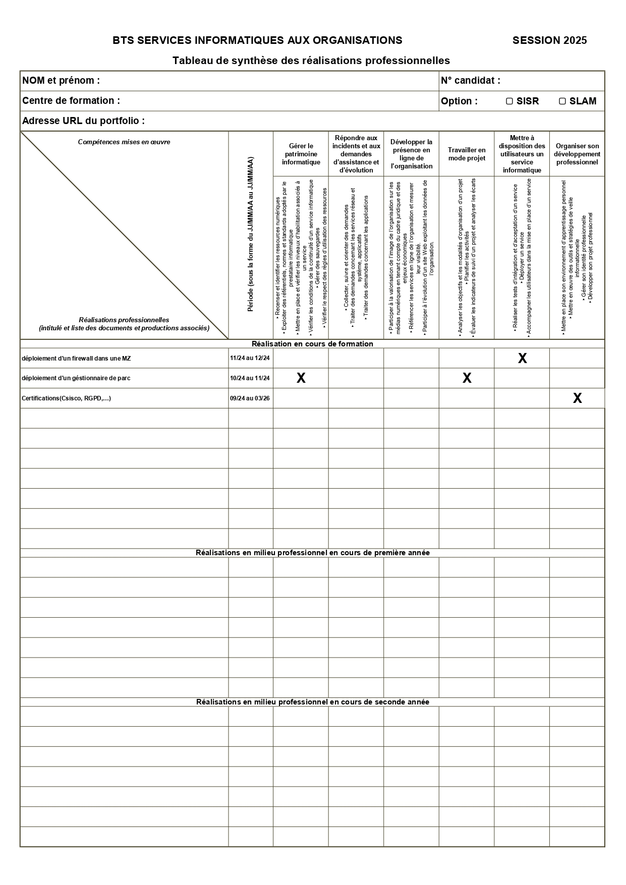

Fiche de synthèse 📄

Résumé
Voici une fiche de synthèse présentant mes informations professionnelles, compétences clés et expériences principales. Elle est conçue pour être partagée ou téléchargée facilement. ✅
Points clés
- • Technicien de proximité au Conseil Départemental
- • BTS SIO (option SISR) en alternance
- • Compétences : support utilisateur, gestion de parc, diagnostic matériel & logiciel
- • Disponibilité pour missions courtes ou long terme
Si vous souhaitez une version modifiable (Word) ou une version courte, dites-le-moi et je l'ajusterai. ✨